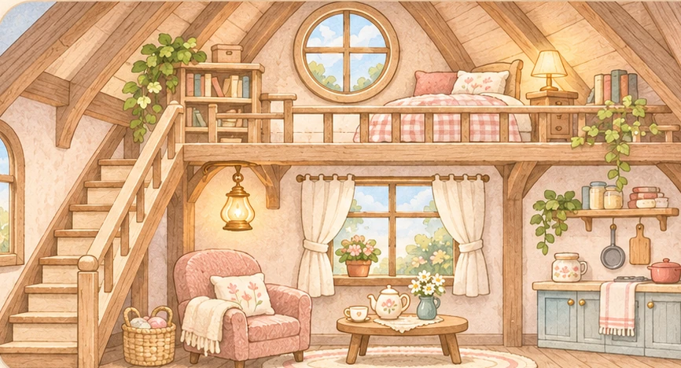
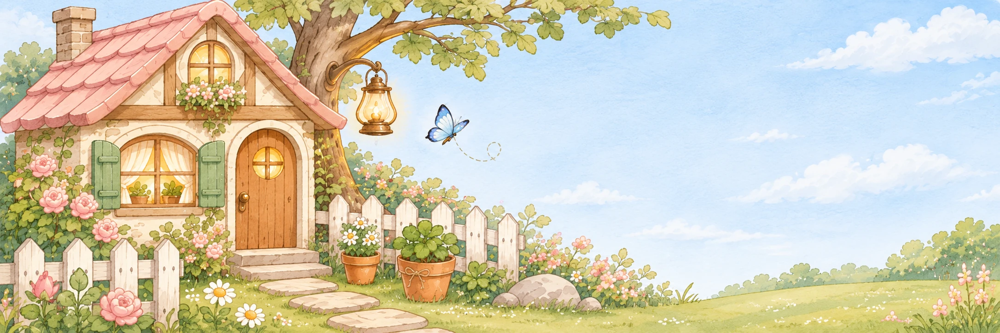

☁️ Season 2 — Beyond the Garden
After mastering her first garden, Kristie may one day visit distant skies and islands. Coming in the future.

One gentle story at a time.
After mastering her first garden, Kristie may one day visit distant skies and islands. Coming in the future.
Some adventures might be better with friends. A future dream, not yet playable.
Progress isn't always a straight line. Every step matters.
Kristie's story is waiting to begin.
✿ Every adventure begins with a first step.
A rainy meadow, an old wooden bridge...
Find a route for Kristie!
“The shortest path is not always the least costly one.”
A little control over how the garden moves.
The same setting is used when Kristie explores a map.
This will erase your saved journey and cottage layout on this browser.
Progress saves locally in this browser; it is not synced to GitHub.
A calm little home base between Season One and Season Two. Switch between the outdoor cottage garden and the indoor loft, and keep the soft storybook style that fits the rest of Little Steps.


A little dream of the garden Kristie can one day decorate. ♡


A tiny place to read, rest, drink tea and get ready for the next adventure. ♡
Pink roof, gentle sky blue, ivory fence, clover pots, and a quieter palette that sits naturally beside the main game.
A duplex-style loft with a bed upstairs, a tiny reading corner, soft wood tones, and a cozy table for tea and rest.
This is Kristie's resting place now, and it can later become the launching point for island maps, world maps, or a magical Season Two.
Meet Kristie, a tiny robot learning to find her way. Build a garden, explore winding paths, and discover how every little mistake can become a new beginning.
Every adventure begins with a little step.
✧ Find the glowing flower.
I wonder where this little path will lead...
We can learn the garden together, one little step at a time.
Can you help Kristie reach the glowing flower?

“Let's take one little step at a time.”
Choose Let Me Try, then use ↑←↓→ or WASD to move. Try your own path before asking an algorithm!
She found her way, one little step at a time.
✦ +50 XP · A new chapter unlocked
✦✿Once upon a little garden...